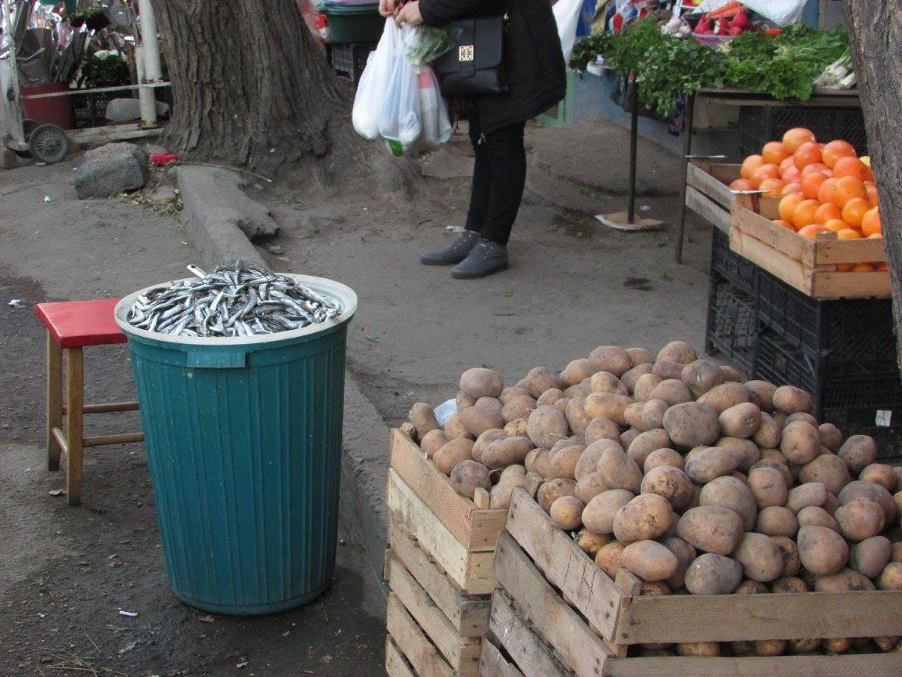

Gruzija
Gruzijos nebuvo mano kelionių sąraše, nėjau iš proto niekada dėl Gruzijos. Artūras norėjo labai pamatyti ir kuo greičiau, kol Gruzija yra dar Gruzija, o ne popsas, bei kol dar ten pigu. Aš, niekada nepraleidžiu kelionių, tad galvoju okey bandom. Perspėju- bus daug negatyvo ir keiksmažodžių. Maistas. Jeigu atsakingai pasirenki vietą kur valgyti yra labai skanu, turi ne vieną savo spec patiekalą. Bet priklauso ir kur valgai.
Cerkvių atmosfera ir ten dirbantys, tarnaujantys žmonės. Patiko cerkvių kvapas, mistika, istorijos, bei bendravau su vienuoliu bei Popu. Daugiau nepatiko niekas. Taigi nuo pradžių. Iš karto pasakau: jeigu tu moki anglų kalbą, jei patinka tvarka, švara, mėgsti tokius miestus ir šalis, kaip Berlynas, Dubajus, Madeira, Šveicarija, jei patinka Skandinavija ir jos gyvenimo principai, esi už teisybę, tvarką, esi humaniškas, higieniškas visom prasmėm, skeptiškai žiūri į tai kad Lietuvą okupavo rusai, myli gyvūnus, dievini patogų gyvenimą Gruzija gali ir nepatikti. Mane iškarto puola, bet gi tai ir yra įdomu, nes Gruzija gyvena kitaip. Ne ačiū. Aš buvau Tunise, Maroke ten taip pat yra kitaip, bet taip baisu, kaip Gruzijoje nėra. Tada pradeda „žinovai“ sakyti, bet kokia gamta graži Gruzijoj, tada aš iš karto paklausiu, kur esi buvęs dar be Gruzijos, žodžiu tokie individai nėra matę nei Alpių, nei buvę Norvegijoje ar Šveicarijoje ar paprastuose Tatruose, tada man aišku, pirmą kartą individas pamatė kalnus, dėl to ir gražu. Mes keliavome nuo Tbilisio į Kutaisi traukiniu, pravažiavome labai daug šiukšlynų kalnuose, taip ir nesupratau kaip taip gali būti, ne keli maišai išmesti, bet masiškas sąvartynas keli kamazai išversti.
Lėktuve Vilnius- Kutaisis publika ne eilinė, nesuprasi ar rusai ar baltarusai, žodžiu labai tipiniai rytu Europiečiai, nyku buvo jau lėktuve. Niekas nemokėjo angliškai, o prie avarinių išėjimų privalo sėdėti angliškai kalbantys keleiviai, mus su Artūru pasodina būtent ten, pliusas, nes turim po 3 sėdynes. Aš vienintelė lėktuve užsisakau valgyti. Atvykus oro-uoste einu tiesiai į WC. Atsidarau duris į moterų tualetus, o ten yra klozetai, kaip ir viskas normaliai su sienom, atskiros patalpėlės, bet be durų!!! Nu naxxxx pagalvoju. Aš negaliu nieko daryti neužsidarius durų, čia kažkoks pasityčiojimas ar kas? Okey matau, kad pamedituoti neišeis, tad bandau daryti mažą reikalą. Baigiu. Tvarkausi ir kažkokia dūra pusrusė išeidama palieka atviras duris!!! Mane mato visi, kas nori, laimei buvau apsirengusi. Plaunuosi rankas žiūriu, ta Nataša paliko savo cigaretes su žažiga, aš iš to pykčio paėmiau ir į kišenę. Dabar to nedaryčiau ir aš aplamai tokių dalykų nedarau, bet tada pasibaisėjau tokiu elgesiu, šlykštynė. Išėjus į lauką pamatau Artūrą, ir sakau jam-nu blet, man čia jau nepatinka. Jis nusprendęs buvo mesti rūkyti cigaretes. Aš ištraukiu cizas su žažigą ir jam duodu, imk čia tau. Tas apsidžiaugė, nes labai norėjo rūkyti. Klausia iš kur gavai? Papasakojau. Sako maladėc, gerai padarei, kad paėmei. Transporto normalaus nėra iki Tbilisio, sėdam į senus nuvarytus, prasmirdusiu Ford Transit busikus, su baisiais vairuotojais iš mordos prasigėrę ir prasirukę, nors atvirai pasakius ten visi vyrai atrodo negaivūs. Dar esu girdėjus iš vyresnės kartos moterų, kurios giria Gruziją, o jau vyrai ten kokie, tamsūs, taip dėmesį tik rodo mum lietuvėms, tos akys tamsios, na matau, kad jau lydosi. Palauk, tai gal geriau italus pasirinkti o ne kažkius prasigėrusius čigonus, nes man jie labiausiai ir neša į čigonus. (čia labai rasistiškai nuskambėjo, bet...)Tie busikai yra su savo istorijomis, jie buvę Kauno maršrutkės, ir atkeliavo čia. Jau Kaune būdavo baisu važiuot su jom, nes tikrai klibančios, o šitie visą chlamą susipirko. Kelias: duobė ant duobės. Degalinėse pamačiau darbuotoją senutę kokių 80 metų, sergančią vos gyvą ir ji dirba! Pagalvojau, kodėl jos niekas neprižiūri, kur socialiniai darbuotojai ar jos giminės, kodėl ja niekas nepasirūpina. O jau kiek valkataujančių šunų, tai visą laiką skaudėjo širdį. Ir mintyse žudžiau individus, kurie prisidėjo prie to, kad valkatauja šitie šunys. Kitiems gal ne gaila, jei taip tai eikit patys po velnių tikiuosi mirsit sunkia mirtim.
Fuuu, o dar tik aprašinėju pradžią, o jau taip sunku ir baisu. Okey duodu dar šansą Gruzijai gal gi patiks. Prieš mus važiuoja busikas, ant stogo narvuose vežamos vištos, kas per mada aplamai vežti daiktus ant stogo, kodėl negalima naudotis priekabomis? Viena višta išlipa iš narvo, ir važiuoja taip. Po kiek laiko ji nukrenta ant kelio ir mūsų „gražuolis fainuolis“ gruzinas ją užmuša pervažiavęs, na netyčia, nes sustabdyti buvo turbūt neįmanoma. Ką aš apie tai galvoju, turbūt nereikia ir sakyti, mes be ja sėdėjome priekyje su vairuotoju, mačiau nuo A iki Z kaip viskas buvo. Sustojam pavalgyti, tipo į kavinę. WC yra užrakinti. Pagaliau jei užrakinti bus normalūs, taip išeina. Reikia mokėti, okey mokam. Įeinu į WC o ten užtvindyta vandeniu, gerai kad esu su Columbia kalnų kedais, jie nepraleidžia vandens ir yra aukštu padui, tai neprisemiu, pusę maršrutkės moterų neina, nes prisemtų. Tai pala kur logika, užrakintas!!! Mokamas!!! Plaukiantis WC? What the Fuck? Ir blyn gal žmogus nori kakų? Kad esi žmogus ir nori kaku toj šaly, geriau nenorėk, tiksliau negalima apie tai net pagalvot. Ir šitą vietą išrinko sustoti „fainiausias“ vyras gruzinas, kuris čia važinėja kiekvieną dieną, mes tikrai pravažiavome ir kiek geresnių sustojimų, ten nestojome, bet matyt gauna savo dalį iš kavinės savininkų, kad atveža čia turistus. Visur šalta. Tiesa mes buvome lapkričio gale. Viduje kavinės, toks vaizdas, kaip 1989 metais, Panevėžio mėsos pardė, kur smirda tikrai nežinau kuom, ir yra sovietiška viskas, pažiaukčioju, nežinau ką valgysiu čia, aš čia nematau ką vagyti. Kažkam Venecija smirda ( iš tikro buvau 5 kartus ir nė karto man nesmirdėjo, nesuprantu kur jūs toj Venecijoj būnat kad jums ten smirda), wow žmonės, jūs rimtai? Tai tada čia mirtumėt nuo kvapo. Susėdam visi prie vieno stalo, kaip šeima, pradeda nešti patiekalus. Sėdi ir vairuotojas kartu. Valgėm tas visokias bulkas su kiaušiniais, nesuprasi „da kepti“ jie ar žali, okey pusę velnio, bet atbulais dantimis, nes pamačius wc ir pagalvojus, kaip ten rankas nusiplauti ir tada kaip atrodo virtuvė, kur gamina maistą, oh my God, geriau net negalvoti. Aš neesu visiška „caca lialia“, kaip jums gali atrodyti. Tunise labai norėjom ėst, ir kai mums gamino kebabą, tas senukas Ali Baba matė, kad mes „netrivojam“ (esame nekantrūs), alkis spaudžia, tai jis mums atlaužė egiptietiškos duonelės nes pats valgė ir padavė gabalėlį. Man buvo mintis kad čia taip negalima imti iš kito rankų ir valgyt medinoje (senamiesčio turgaus gatvėje) ir ypač Afrikoje, bet suvalgiau ir buvo viskas okey, skanu ir smagu. Bet šitie pasitikėjimo nekelia. Arabai meldžiasi 5 kartus per dieną, nu ir kas man sakysite? O tas, kad prieš kiekvieną maldą jie prausiasi, jie gal atrodo suvargę, bet nesmirda ir yra pakankamai švarūs. Žodžiu važiuojame toliau. Vairuotojas mus perkalbinėja, kad mestume savo užsakytą hotel ir eitume gyvent į jo butą, kainos nesako, bet būtų apsukęs, nes nesakėm kiek mokam už savo hotel, o jo kaina vėliau ištardėm buvo trigubai didesnė ir tam bute jau gyvena 2 turistės, mum netinka tokios hostelio sąlygos. Bet va Gruzijos mylėtojams atrodo tai žmogaus svetingumas rodomas. Taip jie kalba daug ir vaidina, kad yra svetingi, bet mokėk“ šaibas“ žmogau, jei nori gauti paslaugą. Be to kada buvai savo toj Gruzijoj? 1970? Ar 1965? Tai mano vaikystėje užėjęs į trobą pas nepažįstamą bobutę kompoto galėdavai gauti, tai nereikėjo ir Gruzijos, svetinga tauta buvo. Bet Gruzijoje dabar ne 2019 metai, o kokie 1989 tai dar ir likęs tas kitoks bendravimas, bet jau „išanglėję“ darosi. Jeigu ne Europos Sąjunga, mes irgi gyventume kaip Gruzijoj. Visur duobės, netvarka, valkatauja senukai, šunys, antisanitarinės sąlygos. Aš pirmą kartą laukiau, kada mūsų kelionė pasibaigs ir laukiau, kada skrisim į Vilnių, namo!!! Nes mes gyvenam labai gerai. Labai gerai!
Vairuotojas mūsų neskubėjo vežti į sutartą vietą, t.y. mūsų hotel, nes manė, kad persigalvosime. Bet po kelių apsuktų ratų per centrą pagaliauprivežė prie mūsų hotel. Administratorius jaunas čiuvas, ir ne čigoniškos išvaizdos, gražus į šviesesnius bruožus neša, sklandžiai kalba angliškai. Nors man nėra problema suprasti rusų. Aš suprantu rusiškai. Bet tuo nesipuikuoju, ir nesiafišuoju (kaip ją mokantys vyresnio amžiaus piliečiai, nes jie dažniausiai tik rusų kalbą ir temoka), kam girtis, kad moki okupantų kalbą??? Kaip vyresni už mane sako: ot jaunimas nemoka rusų, ir galvoja, kad aš nemoku. Tie kas nemoka rusų jūs laimingi žmonės, nes neesate susidūrę su okupantais jokia foma. Administratorius mums siūlo welcome drink, kurį dažnai turiu su savo booking genius statusu, nusiveda į jaukų vyno rūsį ir su mumis praplepa geras 40 min, toks dėmesys mums patinka. Padegustuojame vyną, bet nėra super geras. Aš nelabai gerianti esu, kaip daug kas suprato, tačiau kelionėse padegustuoju po puse taurės bendram išprusimui ir apie vynus visai nusimanau. Ypač domina vietos vynai. Jeigu ragauti, tai tik vyną su istorija, ne eilinėje vietoje.
Hotel daug medinės apdailos, kas patinka ir yra pakankamai jauku. Kambarys puse velnio, wc normalus neužpiltas ir su durimis. Per langą matosi aukso kupolu padengta cerkvė, ir visada girdėjosi mišios, kas buvo gera egzotika. Užmigdavau su jų maldom ir prabusdavau, tai ypač patiko, nuramindavo nepasitenkinimą, kurį čia jaučiau didžiąją dalį kelionės. Tbilisio centras yra sutvarkytas, lygios gatvės, šaligatviai, be duobių, viskas, kaip ir okey, tik išėjus iš centro susiduri su realybe. Niekas nepraleidžia per perėjas. Vieną šuniuką seną kudlotą neišvaizdų paglosčiau, neatlaikiau, tai jis puse dienos su mumis vaikščiojo ir atsekė iki hotel. Verkiau, kad susiradau draugą ir negaliu jam padėt. Norėjau pamaitint mėsom, bet Artūras sako, geriau ne, poto gyvens šalia hotel ir bus dar sunkiau. Stengiausi tada užgniaužti jausmus šalia palaidų valkataujančių šunų, jeigu bijote šunų, nes nekenčiate geriau ten nevarykit, nes jų labai daug, bus per baisu eiti (jie taikūs, bet tie kas jų bijo nes nekenčia galvoja kad visi šunys tik puola). O jus ir puola, nes šunys turi galią jausti šlykščius ir blogus žmones. Taigi vargas jums tada. Norėčiau ir aš šį geną turėti, tada nereikėtų gaišti laiko su lochais.
Maršrutkėj susipažinom su dviem lietuvėm moterim ir jos atrado gidą su mašina, susitarėm kartu varyt į ekskursiją. Atvyko mūsų paimti nuo hotel. Gidas-vairuotojas nuvežė mus į kalnus kur stovi cerkvė ir apačioje dar į vieną miestelį, kur yra vienuolynas. Visą pusdienį leidom laiką visi kartu, buvo visai nieko, gidas mūsų amžiaus, bendraut buvo galima, neįkyrus viskas ok. Man patarpininkavo suvedė su vienu vienuoliu, nes turėjau jam klausimų. Man buvo įdomu sužinoti, kodėl gruzinai, tokie tikintys, nes net vyrai praeidami pro cerkvę persižegnoja, man tai yra gražu. Taigi jis atsakė, kadaise kariavo gruzinai su turkais ir pagal jėgas suprato, kad karo nelaimės ir praras savo žemes, tad beliko tik melstis ir jie meldėsi, ir jie laimėjo prieš turkus, neprarado savo žemės. Nuo to laiko visi gruzinai tiki ir supranta, kad paskutinis dalykas kas yra belikęs ir yra veiksmingas tai yra melstis, tikėti. Tuomet toje cerkvėje mus pastebėjo vyriausias Popas, kaip pas mus kunigas. Buvo ir daugiau lankytojų, bet priėjo prie mūsų pasisveikino, paklausė iš kokio mes krašto, atsakėme, kad iš Lietuvos, Vilniaus. Jis labai nudžiugo, pasakė kad mūsų tauta yra labai gera, supratinga, pamaldi, perdavė linkėjimus , bei stipriai mus palaimino. Tai buvo labai malonu gauti tokį dėmesį iš tokio žmogaus, ko Lietuvoje kunigai išviso nebendrauja su lankytojais, išskyrus Algirdą Toliatą.
Vienuolyne gidą įkalbėjau mane suvesti ir su vienuole, nes norėjau kai ko paklausti. Aš visada turiu klausimų tokiems žmonėms, tik ne visada išeina su jais susitikti. Jis spyriojosi, jog vyras negali kalbinti vienuolių, bet matyt stengėsi palikti gerą įvaizdį ir iš 5-to karto įkalbinėjimų mane suvedė su vyresnio amžiaus vienuole. Mano kausimas buvo: -Kodėl paveikslas kabantis ten aukštai cerkvės palubėje yra visiškai juodas? Ji man paprastai atsako---- Nes nerestauruotas. Visi nustebom, laukiau ypatingos istorijos. Tada pastebėjau, kad daug lankytojų liečia vieną kriptą, paprašiau, kad papasakotų apie tai. -Tai Istorija, kurios nerasite niekur internete, nes nenorim, kad visas pasaulis važiuotu, jis vienuolis, ten palaidotas, dabar jau pripažintas šventuoju, nes ir po mirties padeda žmonėms. Mačiau moteris turbūt po operacijos glaudė krūtinę, konkrečią vietą, nes jis gydo ligas tiek fizinį, tiek sielos skausmą, jo galima prašyti visko. -Per jo laidotuves jo siela buvo aiškiai matoma palubėje. Mes jį net esame nufotografavę. Man parodė nuotrauką, kurioje mačiau dvasią, pavidalą šviesos toje palubėje. Labai įdomu, labai padėkojau už pasakojimą, o palaidoto šventojo vienuolio paprašiau saugoti mane ir mano mylimuosius nuo lygų ir pavojų. Man labai patinka tokios vietos, galėčiau su dvasininkais kalbėtis valandų valandas. Vėliau metro undergrounde radau religines prekes, kur nusipirkau cerkvės aliejaus, kvepiančio myra ir ambra, bei tų pačių kvapų sakų smilkalų, na bent šituo religiniu aspektu, man Gruzija tikrai patinka. Nes gavau šiltą dvasininkų priėmimą. Daug malonesnį nei savam krašte.
Na ką pragaras tęsiasi toliau. Važiuojam su kita maršrutke į Gruzinišką Las Vegasą, dėl to, kad ten galima susituokti bet kada ir užtenka tik vairuotojo pažymėjimo net nereikia paso. Stoty kur vien maršrutkės, ten toks vaizdas susidaro, kad nėra normalių turistinių autobusų, what ever. Nuvarau prieš kelionę į stoties WC. Mokamas!!! Viduj dirba močiutė 90 metų, siaubas pagalvoju, koks senjorų gyvenimas šioje šalyje. Kainavo neatsimenu kiek įėjimas, padaviau daugiau nei kainavo, nes kažkaip baisi situacija. Durys yra, bet kai tupi, nes daug kur yra be klozetų (sakysit kad nesėdat ant unitazo, o aš sėdu, nes su savimi turiu įrangą kai lankau trečio pasaulio šalis, įskaitant ir Ašarų pakalnės šalį (Lietuvą) nes dar ir čia kažko gali nebūti. Tai yra: antibakterinio skysčio, specialius apdangalus vienkartinius klozetam popierinius bei muilo lapelius, nekalbant apie servetėles= viską pirkau Tiger parduotuvėje). Taigi kai tupi-durys remiasi į veidą, turi prasidaryti duris nes kitaip netelpi. Kažkas atėjo dar į WC aš su tom durim susibaladavau, tai močiutė sako man –neboisia (nebijok). Prajuokino. Bet vidurius jau suko, nes viešbuty dirba rusės, kurios gamina pusryčius (kalbėjo aiškia rusų kalba, ne gruziniškai), plepa nesąmones, gamina matyt prastai, randu mišrainėse plaukų, ir salotose neišpjaustyti pomidoro tie įaugę koteliai, mano baba chemikė yra sakiusi, kad daržovėse esančius kotelius reikia išpjauti būtinai, nes tose vietose susikaupia daugiausia nereikalingų, kenksmingų chemikalų. Man aplamai yra nelygis, kai žmogus neišpjauna tų vietų iš daržovių. Apie tokį žmogų daug ką pasako-nesirūpina savim, o juo labiau kitais savo svečiais, daro atmestinai vadinasi ir kitką daro be dėmesio ir meilės, vadinasi nenori išviso gyvent. Aplamai pusryčiai viešbuty kažkas keisto, jos daro lyg prie senų laikų balių, ryte kirsti baltas mišraines, man yra keista.
Pradedam kelionę, važiuojam kokias 2 val, o sumokam gal kokius 3 litus už tą maršrutkę, bet vairuotojas visą kelią pradarytu langu ir rūko, klauso tragiška rusišką muziką, kažkaip iškenčiu. Ten kur nuvykome žiema, sniegas, juodai šalta, noriu atgal į hotel. Bet teks čia prabūt iki vakaro, fuck. Prisistatė kažkokia merga, tipo draugiška aš galiu jums aprodyti miestelį nes turiu laiko, nu ok. Ką pasakojo neatsimenu, nes neįdomu, vien tas palyginimas, kad čia kaip Las Vegas, nebuvau Las Vegas, bet suprantu , kad žiauriai nusišneka, čia tas pats kas rodytu jums Chernobilio foto ir sakytu čia Ukarinietiškas Dubajus. Tai va čia lygiai taip pat. Nuvedė į nesąmoningą muziejų, kur trys eksponatai, tada sako einam nemokamai vyno padegustuot, einam. Ir dar mes neprašėm jos, ji mūsų lydėjo ir pasakojo, šalia lyg praeivė būtų. Nuėjom į kavinę, atsisėdom, nusirengėm laukiam, ta atbėgo sako šiandien degustacijos nebus, bet galite nusipirkti patys vyno. Principo reikalas nepirksim, išėjom. Ten yra viskas pigu, bet nekenčiu, kai apgaudinėja. Dar spyrėsi mus visi sutuokti. No way bitch, tokioj pasaulio skylėj tuoktis -be šansų. Pasiblaškom po tą kalnų miestelį, kas buvo įdomu, tai tolumoje matosi Kaukazo kalnai ir tai padaro šiokį tokį įspūdį jie išties atrodo baugiai įtraukiančiai. Eidami gatve pamatome močiutę žiūrinčia į mus. Ji sveikinasi su mumis, sako ateikit parodysiu ką, surizikuojam jos namas ant skardžio ir aplink namą eina balkonas, tai ji leido tame balkone mums „pakimarinti“, padarė arbatos atsigėrėm kartu, šiek tiek pasikalbėjom, bet vaizdas nerealus tolumoje matomi Kaukazo kalnai. Ji mums sako kai kitą kartą atvažiuosit apsistokite pas mane. Wow, malonu girdėti, aišku nežinome kiek kainuotų, tačiau aš žinau, kad ten niekada negrįšiu. Juk tik dėl balkono į kalnus negrįši.
Pensija Gruzijoj turbūt apie 100 dolerių. Mano vien tik Columbia batai kainuoja daugiau. Kontrastai. Aš užsidirbu pati pinigus, tad tik mano reikalas kur juos galiu išleisti, bet kažkas gauna mažiau nei mano paprasti kalnų kedai. Ta mintis man kelia keistus jausmus. Aš per gerai esu apsirengusi šioje šalyje, na aišku striukė naujausių technologijų , batai, kuprinė viskas Europoje atrodo tiesiog paprastai ir normaliai, aš negalvojau, kad bus nejauku su šita apranga prieš čia gyvenančius žmones, nes jie atrodo tikrai prastai ir vargingai. Niekaip nesuprantu, kaip gali patikti Gruzija, matyti, kad kiti gyvena skurdžiau? Na lietuviai dažnai būna iškrypę kai kuriais niuansais, patinka gyvatėm puikuotis, man tiesiog pasidarė kažkaip net nejauku. Dėvėti patogius gerus kelioninius rūbus –man buvo nejauku dėl tų mūsų skirtumų. Užėjom į krautuvę-turgelį. Prieskoniai, kuriuose mėtėsi pelių šūdai. Pardavėjas diedukas 100 metų amžiaus, bent jau taip atrodo ir jaučiasi, čiut ant kojų pastovi nuo senatvės. Siūlo viską pirkti, paėmė nešvarias stiklines pripylė vietinės čačos paragauti, iš mandagumo paėmiau, bet negėriau, nes stiklinė buvo ypatingai nešvari, viską pardavinėjo ypatingai pigiai, nežinau ar kažką pirkom, nebeatsimenu, bet man jau darėsi nuo visko bloga. Nuo tos antihigienos ir nuo to, kad tokio amžiaus žmonės priversti dar dirbti, nes pensija yra tik 100 dolerių. Parduotuvėje tiesa maisto prekių, kainos nenusileidžia lietuviškom (Carefour‘e). Nauji daiktai, rūbai kainuoja taip pat palyginus normaliai daug. Žinant kiek jie žmonės čia uždirba, dabar suprantu, kodėl taip vargingai atrodo ir silpnai apsirengę. gatvę atsimerkus ,supratau, kad visgi nemiriau. Grįžus į viešbutį sušalus su pakilusia temperatūra atsisėdu duše ant žemės pasileidžiu karštą vandens srovę ir praverkiu visą valandą. Verkiu dėl to kad čia man juodai nepatinka, verkiu dėl visų šunų, ir dėl visų senukų, kurie taip žiauriai čia gyvena, verkiu dėl urodų, kurie nustekeno šalį ir pavertė tokiu vargingu kraštu. Artūras paguldo į lovą ir apkamšo mane, kūnas jau sušilo, siela ramesnė nes išsiverkiau. (Labai retai verkiu, tai man nebūdinga). Supraskit, ant kiek turėjo išvaryt iš kantrybės šita šalis. Užmigdama girdžiu mišias iš cerkvės, šalia guli smilkalai skleidžiantys ambra ir myros kvapus. Pagaliau ramiau ir man.
Visą likusį laiką bandom leisti ramiai, tad prabūnam iki vakaro viešbutyje, vakarop išeiname į „spa“. Taip kabutėse tuoj papasakosiu kodėl. Tipo karštųjų versmių vanduo. Viduje dirba piktos bobos. Visur galima rūkyti visoje Gruzijoje kur tik užsimanai. Tad šitam spa irgi rūko gyvatės. Viduje nesuprasi kas per įstaiga. Labiausiai primena kažkokią lyg ligoninę 1975-tais metai Lietuvą. Mūsų laikas 20:00-21:00. Sėdime, laukiam kada bus galima įeiti į savo spa kabinetą. Šalia mūsų sėdi marozų banda ir visi spokso nemirksėdami į mus. Galiausiai vienas atrodantis normaliausiai, nes su plaukais mus užkalbina. Jis pats emigravęs į Kanadą. Šiek tiek pakalbam, bet vis tiek atstumą palaikėm. Laikrodis rodo 20:18 mes jau turėjome būti savo spa. Atsidaro durys ir išeina gauja girtų prasmirdusių gruzinų, valytoja paskubomis su purvinu skuduru kažką apvalo viduj surenka paliktą alkoholio tarą, viduj prirūkyta. Galite eit. Aš abejoju ar eit aplamai nes tikrai šlykštu, bet suprantu, kad niekas nevertė manęs aplamai į Gruziją važiuot, nusprendžiu eiti iki galo, jeigu aš jau čia. Užsirakinam, persirengimo patalpa, čia viskas išklota sovietinėm plytelėm, labai nejauku, smirda prieš tai gertu alkoholiu ir rūkalais bei siera, nes karštųjų versmių toks kvapas. Kitoje patalpoje mažas baseiniukas su tuo karštu vandeniu. Vanduo neatrodo švarus, nes prieš tai matėme koks kontingentas buvo. Vos pabuvom beldžia į duris užsisakę esam kūno šveitimą ir masažą. Tai buvo pats trumpiausias kūno šveitimas ir masažas gyvenime, iki 5 min viskas viename. Masažuotoja su kibiru manęs juodai nekentė, viską darė taip kad man būtų kuo nemaloniau, aptrankė apdaužė, nudraskė odą žodžių aš likau be amo, nesupratau ar man čia jai atgal duot į kaulus ar eiti atsiimti pinigus. Beje buvau užsisakius arbatos, bet jos taip ir nesulaukiau. Gulime tame vandeny toliau. Tik užsimerki ir vėl beldimas. Atvarė dabar Artūro masažuotojas su kibiru ir su geležiniu strypu gerklėje nuogas iki pusės. Absoliutus siaubo filmas. Jo procedūra praeina taip pat šiurkščiai ir greitai kaip ir mano. Vėl bandome parelaxuoti vandeny ir vėl beldimas, atidarau duris o ten boba kažkokia sako kad mūsų laikas baigėsi. Laikrodis rodo 20:47. Mūsų laikas iki 21:00 plius tie urodai prieš mus užtempė beveik 20 min mūsų laiko. Bet niekas manęs nesiklauso. Uždariau duris. Beldžia ir vėl. Ir taip beldė kol pilnai neapsirangėm ir neišėjom lauk. O kai išėjome jau visas personalas išėjęs namo tik viena sena valytoja su pilku skuduru lūkuriavo prie mūsų durų. Nors spa dirba vos ne visą parą. Grįžom namo, pastebėjau kad mano rankos kažkuom išbertos, pirmas kartas, aš ne esu niekam alergiška, bet tik Gruzijai matyt esu. Sekančią dieną aplankom kelis muziejus, vienas iš jų yra gruzino dailininko Pirosmani galeriją. Labai patiko, bent muziejuje gali atsigauti ir jo paveikslai tikrai įdomūs, dauguma labai juokingi. Perku magnetuką, kainą išmuša dvigubą. Parodau. Atsiprašinėja. Atiduoda pinigus. Perku rankų kremą, kaina taip pat išmušta dviguba. Bet tai pastebiu tik namie. Fuck. Jeigu vis dėlto ten važiuosit stebėkite čekius. Pagaliau traukiniu vykstame į Kutaisi, ten pabūsime paskutinę naktį. Prie traukinių stoties mus pasitinka taxistas sako einam aš jums viską aprodysiu kur bilietą pirkti, man nepatinka, nes nežinau ko laukt iš tokio dėmesio ar apvogs ar po to „klenčins“ pinigus. Šis pasirodė normalus. Traukiniu riedam, šilta ir malonu, pradėjo kažkas rūkyti, tai kontrolierius tą vėžininką išvarė iš mūsų vagono. Labai saugojo mūsų lagaminą, matėsi, kad daro tvarką, kad mums viskas būtų gerai. Tai dėl to labai džiugu, kad bent keliems žmonėms mes ne esame pochui čia Gruzijoje. Mačiau, kaip stoty žvirbliai lesa“ kansarą“ (nuorūką). Ar esate tai matę? Aš niekada. Vėlgi daug valkataujančių šunų labai daug, net miškuose, pievose jų yra. Labai gaila. Traukinio bėgiai eina net per žmogaus sodybos kiemą, traukinys sustojo kieme, per langą matau vyrai kapoja malkas, bobos sėdi šalia ant suoliuko, šunys laksto aplinkui, ir visi vieni į kitus žiūrime, mes į juos jie į mus. Komiška situacija.
Atvykus į Kutaisio stotį mus pasitinka milicininkas, susipažįstame, nes jis labai smalsus. O kažkaip ignoruoti policininką kažkaip mums neįprasta ir nepriimtina. Sužino jis apie mus daug. Sako rytoj mus nuveš nemokamai į oro-uostą, Artūras net numerį davė išprašytas (vėliau man pasakė, kad susakė bet kokius skaičius (: ) Nebenorime su juo kalbėti einam laukan, o jis per visą stotį rėkia mūsų vardus, labai nejauku ir keista ir linksma tuo pat metu. Imam taxi važiuojam į savo viešbutį. Txistas ar girtas ar mirštantis, na kažkoks senis „tormazas“ (stabdis) sako, kad nežino kur yra šis hotel. Nežino net gatvės, vietos. Skambina į mūsų hotel ir vis tiek nieko nesupranta. Tada sakom tai veškite mus bent į centrą. Atsakymas - ne. Nu ir eik tu nachui pats pagalvojam ir einame patys lyg centro. O kas juokingiausia, tas viešbutis buvo toje pačioje gatvėje kaip ir stotis tik kitoje pusėje pradžioje gatvės. Tai jei nenori tai nedirbk, labai keistų žmonių čia sutikome. Bet kas patiko Kutaisi, kad praleidžia pėsčiuosius per perėją. Labai daug prostitučių visos apie 20 metų o gal ir apie 16-ka, vėliau pasiskaitome, kad iš tiesų jų čia daug. Niekas nesemia ir nebaudžia klientų, atsilikimas. Nors daug kur šiuo klausimu yra atsilikta. Prie keityklos jų pilna keičiasi valiutą uždirbtą. Viešbutyje mus pasitinka savininkas, sėdam prie stalo trise degustuojam welcome drink ir kalbam kokias 3 valandas. Atsisakyti negerti ir nekalbėti neįmanoma. O geriame samagona pagamintą su Tranchunu elektrinės spalvos limonadu. Tad atrodo įdomi spalva ir įdomus derinys. Labai pasigėrėm to patys nenorėdami. Aišku ši kelionė buvo 2015-tais metais lapkričio mėnesį, dabar jau neesu tokia mandagi ir nuolanki ir labiau rūpinuosi savim. Naktį tas savininkas vedėsi prostitutes sau, nes gyvenome tik mes ir jis. Daug girdėjome per sienas. Kadangi ne sezonas didelis viešbutis tuščias. Kitą rytą savininko tarnas-vairuotojas mus nuveža i oro-uostą ir pagaliau, pagaliau skrydis į Europą, į Vilnių į normalų, išsivysčiusį kraštą. Turbūt nuo tada pradėjau į Lietuvą žiūrėti palankiau ir geriau. Supratau, kad ne man yra atsilikusios šalys, ypač, kad mes brudo per gyvenimą esam matę daug, nes gimėm sovietų sąjungoje ir kadaise buvo pas mus irgi skurdas ir atsilikimas, vis dar jo ir yra tiek valstybėje tiek pačiuose lietuviuose. Tai buvo puiku pasitikrinti savo ribas kelionėse. Tad į trečias pasaulio šalis nevažiuosiu. Galbūt tik vienintelei Indijai padaryčiau išimtį, bet jokių Tailandų, Afrikos (išskyrus Maroko), Rusijos, Blakanų šalys, Bulgarijų, Pietų Amerikos daugumos valstybių sakau didelį NE. Ten kur vargsta žmonės, nemylimi gyvūnai man nėra ko žiūrėti, ko negaliu pakeisti. Ten kur apgaudinėja žmones ir žiūri į tave kaip į bankomatą . Daugiau mažiau visur į mus žiūri, kaip į banką, bet tada nesakykite, kad gruzinai yra svetingi, nes taip nebėra. Čia man pamoka, kad domėtis reikia dar giliau kur važiuoju. Ir nėra daug žmonių, kurie patartų subjektyviai patartu ar papasakotų apie šalį. Labai svajojau ir apie Tailandą, nes tai palyginus nėra brangu nuvykti, tačiau patikrinau ir negatyvius šaltinius apie šią šalį ir ką jūs? Turbūt nustebsite, bet Tailande daugiausiai dingsta turistų bei labai korumpuota šalis, jau nekalbant apie apgaudinėjimus turistų, tad norėčiau ir jums palinkėti pasigilinti labiau kur vykstate, ir neapsiribokite gražiom nuotraukom iš katalogo, bei kokio nors ale makaliaus rekomendacijomis, visi jie nori parduoti kuo daugiau kelionių, bet mažai kas kalba apie tikrovę. O aplinkiniai „keliautojai“ tik moka girti savo keliones, bet kas buvo ne taip net patys sau nenori pripažinti o juolab kitiems tikrai nepasakos neigiamų dalykų apie keliones. Kainininkas (2015 metai). 7 naktys 2 asmenims, kambarys su vonia ir pusryčiais „7 Bites Hotel“ Tbilisi = 140 eur. 1 naktis 2 asmenim, kambarys su vonia ir pusryčiais „Hotel Rero“ Kutaisi = 19 eur. Wizair skrydis Vinius-Kutaisis-Vilnius tiesioginis 2 asmenims, 1 lagaminas 20 kg = 160 eur